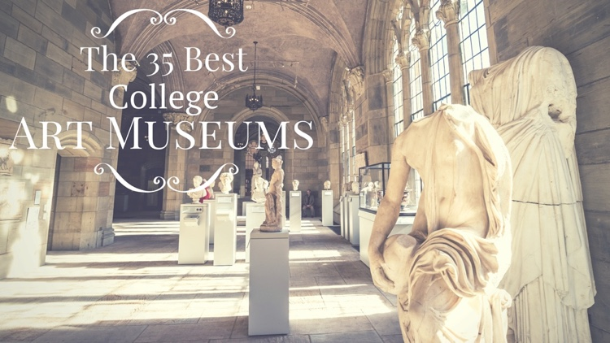

The 35 Best College Art Museums

Famous writer and philosopher Thomas Merton once said, “Art enables us to find ourselves and lose ourselves at the same time.” For most students, college is more than classes and books; it is a time of broadening perspective, self-discovery, and personal growth. Many colleges and universities contain the hidden gem of the university art museum. Filled with historical treasures, glorious and inspiring works of art, and ample opportunity for student engagement, these oases provide beauty for the eyes and inspiration for the soul.
As we scoured the nation for the 35 best college art museums, the list was created based on the following criteria:
- A permanent collection spanning multiple historical and cultural periods
- Size of collection
- Unique opportunities for university students
- Significant community involvement
35. Spencer Museum of Art – University of Kansas

Spencer Art Museum “explores the capacity of art to spark curiosity, inspire creativity, and create connections among people.” With about 36,000 total artifacts spanning European, American, East-Asian, and Native American art, and a notably excellent Medieval collection, Spencer Art Museum fulfills their mission. Formed through a partnership between the Biodiversity Institute, the Hall Center for the Humanities, and the Spencer Art Museum, “The Commons” is a physical and intellectual space where people can come together to establish common ground from which they can “express and explore uncommon ideas for the common good.” Grab a cup of coffee in Idea Café, sit down and listen to one of the Artist Talks, and engage in intellectual pursuits.
34. Colby College Museum of Art

With a mission to serve Colby College as a teaching resource, as well as to be a major cultural destination for the people of Maine, Colby College Museum of Art practices what it preaches. Throughout its history starting in 1959 and over 38,000 square feet of exhibition space, visitors to the museum will find American contemporary art, Chinese antiquities, and European works. According to Sharon Corwin, the Director and Chief Curator, the Museum “sits at the crossroads of interdisciplinary thinking and facilitates stimulating encounters between students, faculty, and community members who share the liberal arts experience.” Juniors and seniors have to opportunity to write and publish museum-based lesson plans for school children, earning them credit while taking advantage of this valuable opportunity.
33. Frances Young Tang Teaching Museum and Art Gallery – Skidmore College

Designed by renowned architect Antione Predock, winner of the 2006 American Institute of Architects Gold Medal, the Tang Museum’s beautiful facilities reflect its mission. Embracing its surroundings, as if it is breaking out of the earth, the main wings reach out in all directions, a symbol of Skidmore’s commitment to interdisciplinary study and the intersection of all disciplines. The Tang Collection is over 7,000 objects from a wide-range of periods and cultures. The Tang is committed to being more than just an art museum, it is an educational center. Classes regularly meet in the galleries and classrooms, and groups from other schools visit to view exhibits and participate in Tang’s numerous academic programs. Tang often hosts plays, musical performances, and dance recitals. Students receive every day, hands-on experience with art at Tang.
32. Eli and Edythe Broad Art Museum – Michigan State University

The Eli and Edythe Broad Art Museum at Michigan State has a unique story. Called “The Broad”, the Museum opened in 2012 and was designed by Pritzker Prize-winning architect Zaha Hadid, a story in and of itself. The Museum features a striking and strange facade of pleated stainless steel and glass, signaling the Museum and the University’s dynamic vision. Focused on growing their collection with contemporary art, the Museum was inherited from the Kresge Art Museum, formerly the art museum of MSU. Highlights include Greek and Roman antiquities, Medieval and Renaissance illuminations, Old Master paintings, 19th century American paintings, and 20th century sculpture. As for community and student engagement, the Broad is strong: family days, artist talks, films, performances, a lively docent program and an interactive, standards based multi-visit school program, galleries and online art, and more are all effective in engaging the community.
31. Harn Museum of Art – University of Florida

The Harn Museum of Art is a cultural and education hub. The vision of the Museum is to be a dynamic leader among public university art museums. With an 112,800-square-foot-facility, 5 garden spaces, a 250-seat auditorium, study center, museum store, café and classroom spaces, one could say the vision is reality. The Harn’s collection totals more than 9,000 historically and culturally diverse objects. From afterhours live music, food, and activities, a relaxing tour of the Museum, to enjoying savory delights and listening to local musicians, the Museum offers many opportunities. Visit the Bishop Study Center where children and adults can explore the touchable objects related to the exhibitions. Located in the University of Florida’s Cultural Plaza, in conjunction with the Florida Museum of Natural History and the Phillips Center for Performing Arts, this museum definitely makes the list.
30. Williams College Museum of Art

Williams College is a small private liberal arts school founded in 1793 and has been a top ranked college in multiple respects. The Williams College Museum of Art is no different; their mission is to “make dynamic art experiences to incite new thinking about art, museums, and the world.” The Museum is accredited by the American Association of Museums and takes the teaching of art in light of the college’s vision seriously. WCMA houses over 14,000 works that spreads over many time periods and cultures. “The museum is especially known for its stellar collection of American art from the late 18th century to the present…with the largest collection in the world of works by the brothers Charles and Maurice Prendergast.” Student involvement is key: Think Tank is a student group dedicated to furthering the teaching mission of the Museum. There are also Gallery Guides, internships, and volunteer opportunities that foster engagement with the school and community.
29. Michael C. Carlos Museum – Emory University

A perusal on the website of the Michael C. Carlos Museum at Emory University presents a clear story. This Museum is a top ranked institution with its collections going back to 1876 (the Museum was founded in 1919). With an emphasis in ancient art, but certainly not limited to it, the Museum has around 17,000 artifacts. These are found in a building designed by noted architect Michael Graves. In addition to the building, collections and outstanding exhibitions the Museum has according to their website, an “ambitious education and outreach program serving thirty thousand school-children…and more than one hundred thousand visitors each year.” Overall, the Michael C. Carlos Museum is a museum dedicated to art and the power of art to transform society.
28. Mead Art Museum – Amherst College

The Mead Art Museum at Amherst College “strives to become an essential, integrated participant in the intellectual and cultural life of Amherst College; a leader among college and university art museums; and a destination for a diverse range of visitors from around the world.” Through its celebrated collection of American and European paintings, Mexican ceramics, Tibetan scroll paintings, ancient Assyrian carvings, and West African sculptures, this Museum meets its mission. The Mead works with the community and offers themed tours and custom gallery experiences that are tailored to fit the needs of each individual group. Not only does Mead strive to meet the needs of the community, it provides unique opportunities for college students. Five college students are chosen each year to serve as student ambassadors for Team Mead. This group meets once a week to share a love of art, gain a sense of what it is like to work in a college museum, and participate in other exciting outreach events.
27. Bowdoin College Museum of Art

Those touring along the Maine Art Museum Trail will find themselves at Bowdoin College Museum of Art. Beginning in the 1800’s with a collection of European paintings, Old Master drawings, and family portraits donated by the Bowdoin family, the Museum is housed in the Walker Art Building, a building which is to be “entirely devoted to art.” Included on the National Register of Historic Places, it is one of the few remaining structures that fully display the architectural and decorative ideals of the late nineteenth century. Be a part of history in the present day and join Bowdoin’s Student Museum Collaborative, a group of students who are passionate about the visual arts. With a mission to increase awareness of the arts on campus, the group works to make sure that art is available to everyone. With its Visual Literacy Program that is geared towards children, Bowdoin also makes art accessible to the broader community.
26. The Fralin Museum of Art – University of Virginia

There is no shortage of community programs at The Fralin Museum of Art. They host “Writer’s Eye,” a creative writing competition, “Family Art JAM’s,” where children and their families can experience current exhibitions, and even partner with local Alzheimer Association as well as the Virginia Institute of Autism to help children with autism. Find public lectures, symposiums, and special events designed to reach students, seniors, and special needs populations; the Fralin is an integral part of the local community. There are about 13,000 objects in the collection at Fralin with one of the most important collections of Australian Aboriginal art outside of Australia. The Fralin is a place where everyone can “study and learn from the direct experience with works of art.”
25. Pomona College Museum of Art

Pomona College is a private liberal arts college in Claremont, Calif with about 1600 students. The school was founded in 1887 and the arts have been an integral element to their mission. The Pomona College Museum of Art (PCMA) exists to support the overall education and community. “The Museum engages, instructs, and delights visitors from a range of audiences” with “programs to link the creative energy of making art and experiencing art.” Student have many options for getting involved at the Museum with curator positions, undergraduate, multicultural, and research internships, and student guard positions, not to mention many volunteer activities. The Rembrandt Club of Pomona College sponsors monthly lectures and teas, excursions to area museums and collections, and a variety of other events which link the community to the college. As for their collection, there are about 11,000 objects and currently, an exciting Master Plan for a new PCMA is in the works. The Skyspace, a beautiful public work of art titled, “Dividing the Light,” is a unique piece at the college. All in all, the PCMA is now and looks to be in the future, a great school for art lovers.
24. Chazen Museum of Art – University of Wisconsin-Madison

Tune into monthly live chamber concerts on Wisconsin Public Radio and listen to broadcasts from the Chazen Museum of Art. These concerts are just one way the Museum serves the people of Wisconsin. Since 1970, students, faculty, and the community have enjoyed a range of activities at the Museum including galas, music performances, and special events arranged by students; Chazen is a center for the arts. The Museum is now home to over 20,000 works of art with a growing permanent collection, including recently acquired Romare Bearden’s Circe (1977), a work featured in the Smithsonian Institution’s traveling exhibition Romare Bearden: A Black Odyssey. Romare Bearden is one of the foremost African-American artitst of the 20th century. The Chazen Museum of Art lives up to its mission to preserve art “because the visual arts enrich individual human experience and because knowledge of art is essential to understanding diverse cultures, past and present.” Take advantage of free admission and spend a day in one of the finest collegiate art museums in the United States.
23. Ackland Art Museum – University of North Carolina at Chapel Hill

Beginning in 1958, and now boasting a permanent collection of over 17,000 works of art, the Ackland Art Museum lives its vision to serve at a local, regional, and national level through innovative research and art preservation. Known for a deep commitment to art education, the Museum is free of charge. Join other University of North Carolina students at “Art a la Carte,” and explore your inner artist while examining techniques, materials, and effects that other artists have achieved. In addition to the Museum’s diverse permanent collection, there are also more than a dozen special exhibitions every year, making the Ackland a popular destination for art enthusiasts.
22. The Frances Lehman Loeb Art Center – Vassar College

In 1864 Vassar College became the first college or university in the country to include an art museum as part of its original plan. Intentional from the outset, and growing from 3,000 objects to an impressive 19,000 currently, spanning all of history and many cultures, the collection includes paintings, sculptures, drawings, prints, photographs, textiles, and more. What is unique about the Frances Lehman Loeb Art Center is their concerted efforts to make art accessible to as many people as possible. They do this by well-organized, managed, and programmed activities and spaces; there is even complete online access to the collection. Vassar College also has beautiful architecture, which the New York Times has called “a symphony of architecture.” Being dedicated to art and making it accessible also naturally leads to many opportunities for students and the community.
21. Smith College Museum of Art

Smith College is a private, independent women’s liberal arts college with coed graduate and certificate programs founded in 1875. As a premier liberal arts school in the country, art is at the center. The Smith College Museum of Art (SCMA) began in 1879 and has collected 25,000 works from many masters periods from a variety of cultures. SCMA has a great permanent collection with works by Edgar Degas, Paul Cézanne, and Claude Monet to name a few. The education component of the Museum is also strong. With family programs, great exhibits, many student opportunities, community involvement, a strong database and digital access, and an integrated network with other museums in Massachusetts, Smith College is exemplary.
20. Nasher Museum of Art – Duke University

Opening in 2005, Nasher Museum of Art appeared on the scene with flare. Designed by architect Rafael Vinoly, this $24 million project draws over 100,000 visitors annually. Not only is the Museum an amazing piece of architecture, it is home to over 13,000 pieces of art. With an active Student Advisory Board, the voice of the student body is heard. Nasher also provides students with the opportunity to work with faculty to create an Academic Focus Gallery relevant to their area of study. Combined with Nasher’s online art curriculum, “Words and Pictures” for primary students, Nasher has the edge on the market for community and student involvement, housed in a truly spectacular building. As for the collection, the website states, “The strengths of the Museum’s permanent collection are Medieval art, art of the Americas (largely pre-Columbian), Classical Antiquities and modern and contemporary art.”
19. Hood Museum of Art – Dartmouth College

The Hood Museum of Art at Dartmouth began collecting objects back in 1772, leading to its extensive collection of over 65,000 objects; objects hail from the Americas, Europe, Africa, Papua New Guinea, Australia, and more. The Museum provides a unique opportunity at Dartmouth for senior interns. Titled “A Space for Dialogue,” students are mentored through the process of putting together a professional art display. They are asked to conceive of a “provocative, thoughtful grouping of objects” to be put on display for the public. This provides the student with insight into curator work and the public with a unique view and access to art. The Museum is viewed as a place to learn, dedicated to teaching visitors visual literacy skills. Even Dartmouth Medical School students are provided with “The Art of Clinical Observation” workshops to help enhance their visual skills while working with patients. Every wall in the Museum is a classroom for all who enter.
18. Zimmerli Art Museum – Rutgers University

Zimmerli Art Museum is an excellent university art museum. It has an extensive collection “with 60,000 objects ranging from ancient to contemporary art and featuring particularly rich holdings in the areas of French art of the nineteenth century, Russian and Soviet Nonconformist Art, and American and European works on paper, including prints, drawings, photographs, and rare books.” The Museum also seeks to share the amazing wealth and beauty art provides though internship programs, programs for high school students to become junior volunteers and assist at the Museum, family art projects, drawing workshops, summer art camp, and Rutgers Day. This Museum takes being involved with the community to the next level. Art lovers are thrilled to know the Museum is home to a rare portrait done by Claude Monet of his father and an impressive collection of 19th century French art.
17. Cantor Arts Center – Stanford University

The doors to Stanford University’s art museum opened in 1894. Now named the Cantor Arts Center, the Museum offers an impressive collection of works, outstanding student and community opportunities, and a sanctuary of beauty in an uncertain world. Stroll through the Rodin Sculpture Garden at Cantor Arts Center, the largest Rodin collection outside of Paris itself, meander through the numerous galleries and changing exhibitions, or relax in the Cool Café which features local seasonal fruits and vegetables. As for student and community engagement, Cantor offers free, no-credit classes for students of all experience levels throughout the year. Families can visit every Sunday for free events, with changing themes for tours and art-making activities.
16. St. Louis University Museum of Art

St. Louis University is a great place for those interested in all things art. “The Jesuit tradition flourishes with the visual stimulation triggered by the images of the society surrounding the individual. Art reflects society, and hence, it enriches cognitive thinking and development of social expression.” SLU offers students many opportunities to learn and enjoy beautiful art. The St. Louis University Museum of Art is found in the Beaux Artes building and historic landmark; the collection of the Western Jesuit Missions showcases religious art and artifacts from the 13th to the 20th centuries. The John and Ann MacLennan Collection of Asian Decorative Art is one of the largest collections of its kind in the United States. In addition to the SLUMA, students and visitors can enjoy the Samuel Cupples House with excellent architecture and some art on display, the Museum of Contemporary Religious Art, the Pere Marquette Gallery, a sculpture garden and more, not to mention the great Art Museum (of the city of St. Louis) in Forrest Park. It goes without saying, this powerhouse of art and culture offers students and the community many opportunities.
15. Snite Museum of Art – University of Notre Dame

Not every university art museum can claim the famous Vatican artist Luigi Gregori as their teacher and interior designer, but the Snite Museum of Art makes this claim. Gregori was hired in 1874 to help get the Museum started; the first collection was comprised of 60 portraits painted by Gregori himself. Currently there are over 27,000 artifacts in the permanent collection and the Museum has 10-12 exhibits a year. True to its goal to provide students with the opportunity to do original research, the Museum contains a large collection of Latino, African, African American, and Native North American objects. University students can join “Snite Salons,” a group dedicated to the exchange of ideas about great works of art. The Snite also designs hands-on workshops for local teachers, provided free of charge. Without a doubt, the Snite offers an impressive collection, diverse exhibitions, and ample student opportunity.
14. Princeton University Art Museum

Join other museum members and travel with Princeton University Art Museum to some of the world’s foremost cultural destinations. This Museum’s travel program, offers members the unique opportunity to view private collections, visit artist’s studios, and tour other major museums. One of the world’s grandest university art museums, starting in the 1750’s and now boasting a collection of over 92,000 works of art, this Museum hosts visitors from around the world. With a prodigious collection of photographs, numbering over 20,000, showing the history of photography from the invention of the daguerreotype in 1839 to the present, this Museum represents art in all its forms. In addition to an impressive collection, the Museum offers tours, events, and multiple student internships and opportunities both for the undergraduate and graduate.
13. Berkeley Art Museum and Pacific Film Archives – University of California, Berkeley

The Berkeley Art Museum and Pacific Film Archives is home to an impressive collection, including more than 19,000 works of art and 16,000 films and videos. The collection includes Ming and Qing dynasty Chinese paintings, Mughal dynasty Indian miniature painting, Baroque painting, old master prints and drawings, early American painting, 19th and 20th century photography, conceptual art, international contemporary art, international animations, and the largest collection of Japanese films outside of Japan The Film Library and Study Center is one of the major film reference resources in the country; this extensive collection is easily accessible to researchers, students, and the community. The Museum has a noble mission to “inspire the imagination and ignite critical dialogue through art and film. We aspire to be locally connected and globally relevant, engaging audiences from the campus community, and beyond.”
12. The University of Mississippi Museum

There is something for everyone at this art museum. Serving the community with a broad range of outreach programs, after school programs, adult education, and events for families since 1939, this university art museum is much more than a collection of art. Visitors may tour two historic houses, including William Faulkner’s home, and then meander back to the Museum’s vast collection of Greek and Roman antiquities, folk art collection, or a display of over five-hundred 19th century scientific instruments. These include telescopes and models of large machines as well as a demonstration of the devices for teaching the sciences. Combined with their ever-changing exhibitions, the University of Mississippi Museum ranks high.
11. Mount Holyoke College Art Museum

Making its name as one of the first collegiate museums in the United States, founded in 1876, Mount Holyoke College Art Museum is actively used by students studying art, history, chemistry, French, anthropology, philosophy, religion, and many other disciplines. This Museum is appeals to all ages. With a permanent collection of over 16,000 objects from all over the world, art lovers always have a fresh collection to peruse as the Museum constantly rotates their displays. Not only does Mount Holyoke College Art Museum provide a dynamic experience for its students, it is the principal cultural resource for the community. Serving five other local academic communities, its numerous events are offered free of charge and open to the general public and is a place where “learning at the intersection of art and ideas” occurs daily.
10. Yale University Art Gallery

The Yale University Art Gallery houses an impressive 185,000 objects in its permanent collection with a broad span of historical and cultural periods from ancient to modern. Located in historic New England, the Museum is home to over 100 paintings of the American Revolution, which provided the startup collection, donated in 1832 by patriot-artist John Trumball. Yale University students can apply to become a Gallery Guide, a special program designed for students to become more familiar with the Museum’ collection. Students go through a yearlong, in-depth training with museum staff, curators, and faculty members providing an excellent way for students of all majors to integrate art into their college experience while giving back to the community.
9. Weisman Art Museum – University of Minnesota

This peculiar and intriguing art museum began in 1934 in an auditorium. Now offering one of the country’s largest and most dynamic public art programs, art at Weisman Art Museum has expanded far beyond the walls of its building. Public art covers more than thirty areas around campus, from building entrances and hallways, to courtyards and plazas. Offering an art rental program for students and faculty, Weisman Art Museum allows everyone to experience the beauty art can offer to the soul. Paintings by American artist Georgia O’Keefe adorn the walls of this architectural wonder that overlooks the Mississippi River. Known as the “modern art museum,” students have access to over 20,000 objects on permanent display, from prehistoric art, to Korean furniture, with majority of holdings from the early 20th century.
8. Blanton Museum of Art – University of Texas at Austin

Blanton Museum of Art is a cultural gateway for the University of Texas and surrounding community. It has an impressive collection of more than 17,000 objects in amazing facilities and features a generous fellowship program for art students. Blanton also offers excellent opportunities for student groups. Any campus group, service organization, or special interest club can arrange for a customized tour of Blanton, providing a unique view of the Museum suited to the group’s interest. Celebrate a new exhibition every fall, spring, and summer with the “B Scene” party, complete with live music and dancing, food, activities, and guided gallery tours. Blanton reaches the broader community through the H-E-B Study Room, a public study center designed to accommodate classes or museum visitors.
7. Allen Memorial Art Museum – Oberlin College

The Allen Memorial Art Museum was founded in 1917 and serves the community of Oberlin College in Ohio. The Museum is on par with all the best public universities can offer. It has “an outstanding collection of nearly 14,000 works of art…that provide a comprehensive overview of the history of art from a variety of cultures. The collection is particularly strong in European and American paintings and sculpture from the 15th century to today.” Just the art holdings alone rank high, but Oberlin excels at being a teaching museum providing ample resources for students, faculty, and the surrounding community. Another distinctive characteristic is the art rental program, which allows students to rent art for $5 dollars a semester. One of the hardest choices students have to make is which artist should hang above their bed: Renoir, Picasso, or Dali? With its enormous collection of art spanning almost every culture throughout history, the gallery is housed in a beautiful Italian Renaissance-style building that will leave students feeling like they are in Florence rather than Oberlin, Ohio.
6. Hammer Museum – University of California, Los Angeles

The Hammer Museum at UCLA was founded in 1990. It has five major permanent collections from old to new, but a special emphasis on emerging contemporary art. The Museum is one of three public arts units of the School of Arts and Architecture at UCLA. Their website is excellent and says about the mission, “The Hammer Museum champions the art and artists who challenge us to see the world in a new light, to experience the unexpected, to ignite our imaginations, and inspire change.” They accomplish this with an excellent public engagement and educational vision. Opportunities include Hammer Kids, local outreach and accessibility for local schools, and over 300 programs a year. Whether attending the 300-seat Billy Wilder Theater or museum café, or perusing the fine collection or exhibits, the Hammer is definitely the “vibrant intellectual and creative nexus” it claims to be.
5. Brigham Young University Museum of Art

The Brigham Young University Museum of Art is “a place where the heart and mind are brought together.” This bringing together is accomplished through about 17,000 objects, 10 exhibition galleries, an auditorium, classrooms, a small theater, a print study room, a gift store, and a café. Overall, BYU’s Museum of Art is one of the largest and best-attended art museums in the mountain west. Students are offered an expansive internship program working with museum curators, educators, registration staff, exhibition designers, or even working in the marketing and communication department. After walking through the Museum, visitors can grab a cup of coffee at the Museum Café which overlooks a gorgeous sculpture garden and reflection pool to relax and ponder the beauty just witnessed.
4. Indiana University Art Museum

Any museum that has works of Claude Monet or Pablo Picasso attracts attention. The Indiana University Art Museum has these renowned artists and more. Established in 1941 and housing over 45,000 objects, IU Art Museum is impressive. Herman B. Wells (1902–2000) hired Henry R. Hope (1905–1989), and served as the progenitors of the Museum. They wanted art “from antiquity to contemporary, from west to east,” which the permanent collection achieves. This outstanding collection is enhanced by great exhibits and educational programs. University students can enjoy the creative and ambitious Curriculum-Structured Gallery Program, which features the collaboration of faculty and museum staff to create customized lessons fitting in with any class in the regular curriculum. Students can also get involved through internships, volunteering, docents, and Graduate Assistantships.
3. University of Michigan Museum of Art

Pushing the definition of what it means to be an art museum, the University of Michigan Museum of Art’s massive expansion and remodel made this art museum into the “new town square for the 21st century.” Including meeting spaces for campus and community organizations, new programs in the visual, performing, and literary arts, a new store, and spaces to relax, the opportunities at the Museum are endless. Host receptions, parties, lectures, classes, corporate events, or even a wedding in the variety of rooms and spaces. A unique aspect of UMMA is their multi-year project to identify and classify objects that were unlawfully appropriated by Hitler during World War II. The Museum of Art is committed to making their findings available to the public. This cutting edge art museum is unique and provides a look into the future of art museums.
2. Rhode Island School of Design Museum

The Rhode Island School of Design Museum was founded in 1877 in Providence, Rhode Island. Containing over 100,000 objects ranging from ancient to contemporary history and culture, it is one of the largest university art museums in the United States. “Distinguished by its relationship to the Rhode Island School of Design (RISD), the Museum educates and inspires artists, designers, students, scholars, and the general public through exhibitions, programs, and publications.” Student opportunities abound for undergraduates and graduates: the Museum Guild internships, the Museum Fellows program, which works with the History of Art and Visual Culture department, and graduate research programs. In addition to these strong programs for college students, the Museum offers performances, Art and Design Lab for High School Students, Tours for Tots, Open Studio, Family See and Sketch, and many family and public outreach events .
1. Harvard Art Museums

The Harvard Art Museums are a group of three museums with over 250,000 objects. The Museums’ website says the mission is to “bring to light the intrinsic power of art and promote critical looking and thinking for students, faculty, and the public.” This is certainly true with impressive collections covering the whole scope of the human experience through time. There are many ways to get involved, enjoy, learn or research art for the community and student. The Art Study Center allows visitors to request objects not currently on display in the galleries, facilitating self-directed teaching and learning all under a glass rooftop ideal for viewing art. The Museums have four research centers—the Archaeological Exploration of Sardis, Center for the Technical Study of Modern Art, Harvard Art Museums Archives, and Straus Center for Conservation and Technical Studies—advance the understanding of, and the care for, artwork, artists’ materials, and cultural heritage. There is no doubt that Harvard Art Museums belongs at the top of the list.